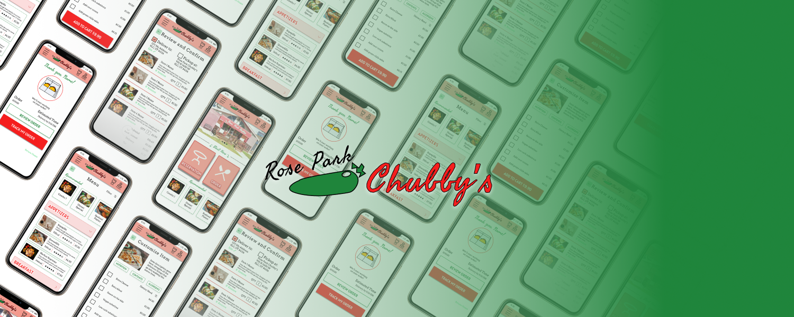
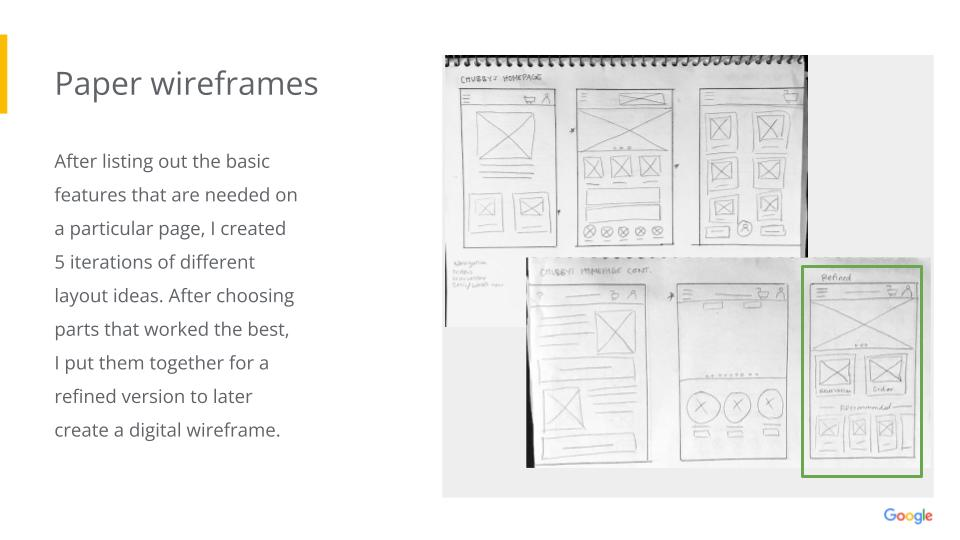
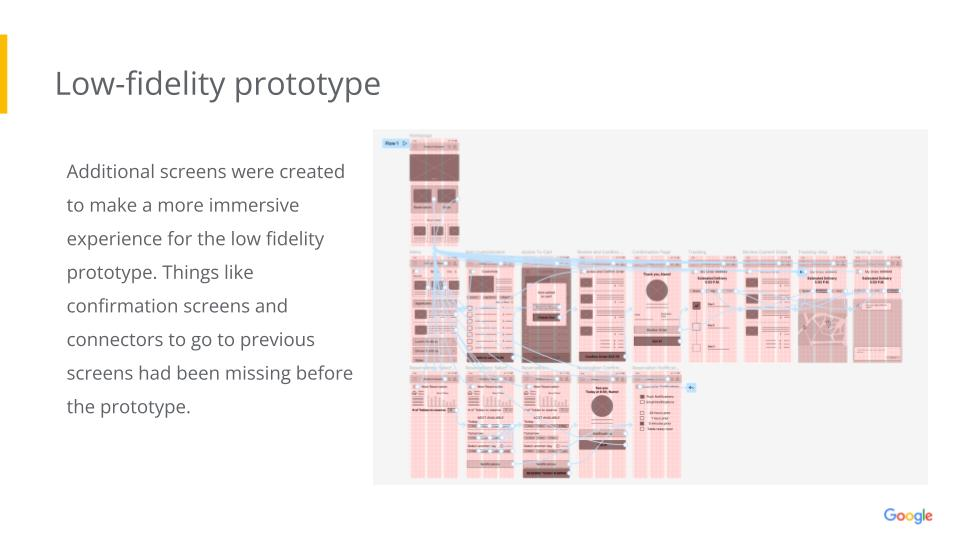

UX Case Study: Chubby's Restaurant App Order and Reservation Flows
Low and high fidelity prototypes
The sharpen prompt for my portfolio project was to build an ecommerce app for my favorite hometown restaurant. I designed an app for Chubby’s Mexican Restaurant and built a low fidelity prototype illustrating the two primary user flows of creating an order or booking a reservation. With this usability study, I was looking to find any pain points or features that are missing, as the goal is for users to have a pleasant and efficient experience.
User Connections
UX design must put the user first and therefore the perfect place to start is with user research. I drafted screener and interview questions for potential user interviews. I used the pre-formulated user profiles from the assignment to attempt to answer these questions as 4 of these individuals and asked 2 of my friends with different experiences using food ordering applications these interview questions.
I initially chose my user groups first, based on age and second, based on a likelihood to want to eat out at a restaurant or use an app (steady income, people who are busy and like to order on the go). I assumed that potential users of this app would be people who are either living in the neighborhood or who are loyal customers of the small local restaurant. For this reason, I changed some of their places of location from the original profiles we were given. It was also difficult to not use stereotypes or biases when answering as a character who I am not.
I think in the future I will create more conversational open ended questions. More exposure to exemplars would have been helpful. I also feel that initial interviews often lead to more questions later on that might not be able to be answered within the required time of a sprint.
Pain Points
I found 4 main user pain points during my research: Reviews, Communication, Ordering Options, and Incentives. I began to address these pain points while sketching wireframes, but paying the most attention to Ordering Options since mapping out a flow from start to finish was the primary function of the app. Crazy 8's was helpful in getting out several iterations of each page and to then decide on what features would address the pain points and be useful to the personas I made up.
Going Digital
Diving into a new software, Figma, I created my refined wireframes in the digital space to be more precise and have the ability to connect the screens in a low fidelity prototype (click here to view). This was the most fun for me because everything was starting to come to life and be more interactive. This tool also proved to be very helpful in teaching me why the position of a UX designer is sought out.
Quickly creating wireframes and low-fidelity prototypes means that usability studies can happen much earlier in the process of product design. This saves a lot of time and money and gives a better idea of how a product will be used and received when it is launched.
For my low-fi prototype, I could envision the flow so clearly, but users in the usability study had a difficult time while it was in this wireframe stage.
Practical Designs
When the time finally came to make mockups and move closer to high fidelity prototypes, there was even more to learn. One thing that I felt was different for me than my peers in this course, is that I had chosen a prompt that required me to create an app for a company that already has at least somewhat of a brand identity. I think this was helpful for me to see how my skills would have to apply in a real-world working situation, instead of having such free reign for design. My challenge then became, how can I create something that looks new and fresh while still keeping in line with Chubby's design and brand identity.
The color scheme was already set by the brand, so I really just had to find some color pickers that worked well for web and accessibility. Next was to find some fonts that were similar to what Chubby's already used, but to limit font use to the max of 3 different typefaces. After putting everything together, I felt the design was much more lively than my wireframes and was proud of my work. However, I had to face another lesson in peer reviews and another usability study. My main takeaway here was to not get too attached to my personal work and remember that at the end of the day, all my work should be user focused. Changes must be made to improve.
100% Success
The main focus of creating 2 successful user flows, ordering and reservations worked out great. During the usability study, all of the participants were able to find their way throught the process quickly and easily. That is not to say that they did not have additional feedback for ways to improve. Some asked about what would happen with edge cases, or how to cancel an order or a reservation. Additionally, many of the features that were provisioned for in my mock ups have not been built out.
Going forward, besides building out the app to be more complete, I think I could use professional feedback from mentors or other design communities in how to tackle a situation like this where perhaps the current branding is dated, but needs to be used to keep consistent. I also think using assets that are already built would help things move more quickly and conform to more updated conventions.